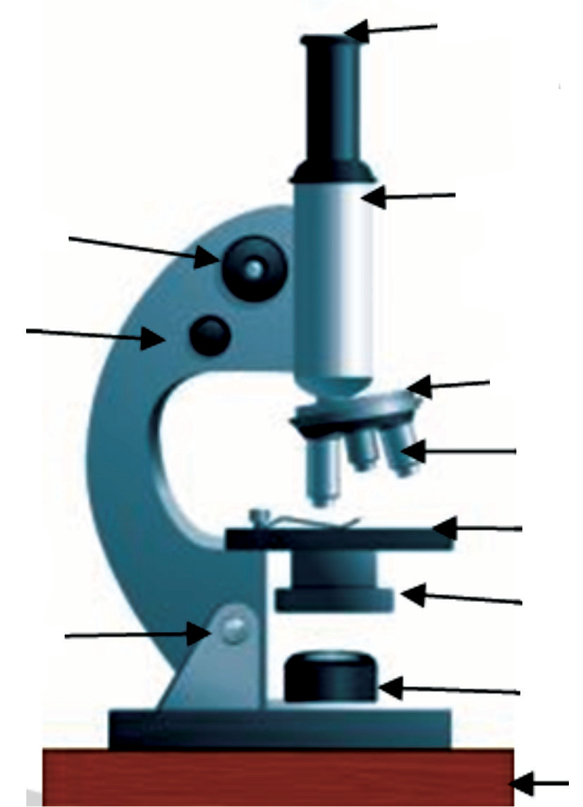

objective lens. This lens forms a real, inverted and magnified image of the object. The image formed by the objective lens serves as the object for the second lens, which is known as the eyepiece. The eyepiece functions as a simple microscope to produce the final image, which is enlarged and virtual.
A compound microscope has a revolving nose piece that allows the user to change the objective lens according to needs. The compound microscope also consists of the lighting system, which may be called the illumination system. It consists of a light source, which can be an electric bulb, a light-emitting diode (LED) or sometimes natural sunlight. There is also a mirror and a condenser which help to transmit light through an object for viewing. On the other hand, the compound microscope has a focusing system.
This system is made of coarse and fine adjustment knobs, which are essential for moving the objective lens away or towards the object in searching for a clear image. The system also has the inclination joint, which helps in tilting the microscope for a comfortable view. Other parts of a compound microscope include the body tube, which separates the objective and the eyepiece and assures continuous alignment of the optics. A stage is used for holding the object to be viewed, and the base supports the whole structure of the microscope. Figure 6.3 shows important parts of a compound microscope.

Mode of action of a compound microscope
A compound microscope works by using the principle that an image formed by one optical element can serve as the object for the second optical element. That is, an image formed by the objective lens is used as the object for the eyepiece. The object to be viewed is placed just beyond the first focal point of the objective lens, which forms a real and enlarged image as illustrated by Figure 6.4.
In a properly designed compound microscope, the image formed by the objective lens lies just inside the focal point of the eyepiece. The eyepiece (or ocular) acts as a simple magnifier and forms a final virtual image . The position of may be anywhere between the near and far points of the eye.